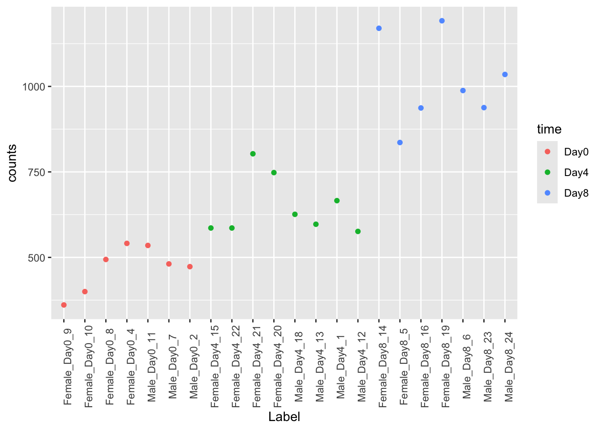
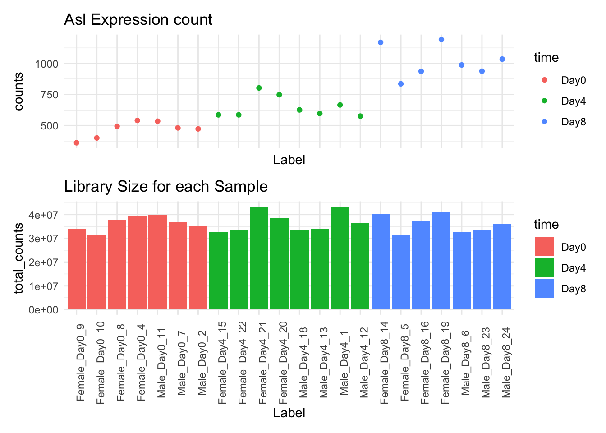

Last week we talked about Experimental Design. This week we’re going to apply that knowledge to finding differential expressed genes or transcripts - finding those genes or transcripts that are expressed differently between groups in our experimental design.
That is, in general, are there genes for the samples in group A that have different counts than the samples in group B?
We’ll Explore the edgeR package as one method to find differentially expressed genes. There is also the DESeq2 package.
Am I doing this right?
If you are new to differential expression, it is worth talking with the Bioinformatics Core about your experimental design and how to set up your model matrix and contrasts.
You did consult with them about the experimental design of your experiment before you sent the samples to be processed, I hope.
Count Data is Discrete Data
What does it mean when we say a set of samples is differentially expressed when we are using count data?
The following plot is the plot of the expression counts for the Asl gene across all samples in our dataset grouped by time. There appears to be a difference in expression across the samples by timepoint, but there is a lot of variation that we can see in the data.
expression_plot<-GSE96870|>filter(.feature=="Asl")|>ggplot(aes(x =Label, y =counts, color =time))+geom_point()+theme(axis.text.x =element_text(angle =90))expression_plot

The issue is that the library sizes of each sample is different. If we compare the counts of each library, we’ll see they vary.
tidySummarizedExperiment says: A data frame is returned for independent data analysis.
expression_plot/count_plot

You will notice that the counts for Asl across the samples vary by Library size (if you can’t see it, look at the patterns of ups and downs). For us to truly compare the expression differences between our timepoints, we need to remove the effect of library size before we make the comparison.
What about Single Cell Data?
Single cell data actually uses a similar approach to discover differentially expressed genes: the pseudo-bulk approach. That is, counts for like cells are treated like a single bulk RNA sample. Then the pseudo-bulk samples can be tested for differential expression much like we’re going to do.
The General Differential Expression Workflow
graph TD
A[Reading in Data] --> B
B[Metadata] --> C
C[Data Exploration] --> D
subgraph DESeq2
D[Filtering and Normalization] --> E
E[Design Matrix] --> F
F[Dispersion Estimation] --> G
G[Differential Expression]
end
G --> H[Annotation and Gene Set Analysis]
G --> I[Clustering and Visualization]
G --> J[Pathway and Network Analysis]
What groups are we going to compare?
Making a DEGlist Object
We can make a DEGlist object from our SummarizedExperiment object using []:
Commands Used in edgeR package
Procedure
Command
Filtering
Data Filtering in edgeR
We need to filter out those genes with low expression (low count number) before we run analysis. Alternatively, we can select genes to test by using Coefficient of Variation to find the most variable genes.
Data Normalization in edgeR
One of the things we need to account for is library size of our samples. Experimentally, there is variability in the number of reads across samples.
Two group comparison
Multiple Groups
In general, we want to use a Generalized Linear Model to discover differences between groups.
graph TD
A["ANOVA\n(across all groups)"] --> B["Contrasts\n(between groups)"]
One thing to keep in mind is that unless we know which group comparisons we want to focus on, we first have to do the ANOVA (analysis of variance) test to see if there are any differences among all groups.
Only then can we move on to individual comparisons and discover differentially expressed genes for each group comparison.
Multiple Groups, Multiple Factors
Take Home Points
We need to filter out those genes with low expression (low count number) before we run analysis. Alternatively, we can select genes to test by using Coefficient of Variation to find the most variable genes.
Count Data must be normalized by the library size to compare across samples.
We model data using distributions, and use those models to find expression differences.
edgeR and DESeq2 are complementary approaches. Results from one method may be different than the other.